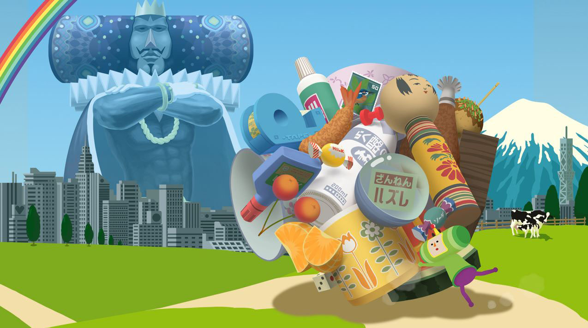
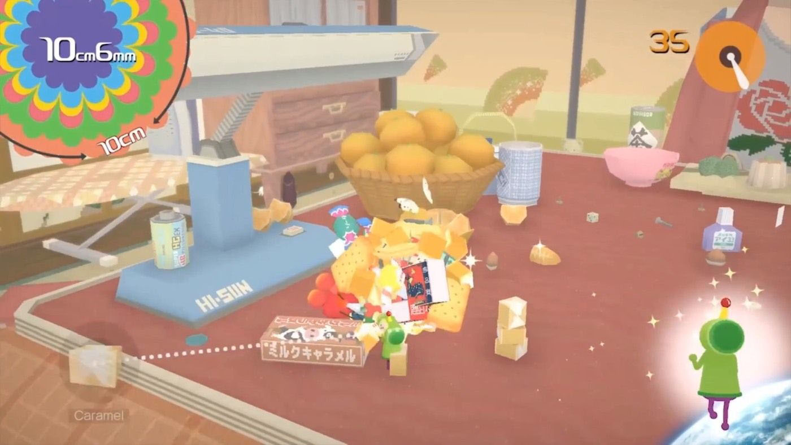

KATAMARI DAMACY REROLL — САМАЯ ХАОТИЧНАЯ И КЛАССНАЯ ИГРА НА ЗИМНИЕ ПРАЗДНИКИ
20 ноября на PlayStation 4 и Xbox One вышел ремастер веселой и красочной головоломки Katamari Damacy REROLL, которая впервые увидела свет в 2004 году, еще на PlayStation 2. Дима Веснин радуется переизданию и рассказывает, почему Katamari Damacy может быть самой классной, хаотичной и дурацкой игрой, в которую стоит поиграть на зимних каникулах.
О ЧЁМ ЭТА ИГРА?!
Завязка Katamari Damacy простая: Король Космоса, отец нашего героя, проснулся утром, кажется, с похмелья и узнал, что ночью он натворил дел. И не просто буянил, а разнес к чертям все небо, и теперь на нем не осталось ни одной звезды. Как достопочтенный король он, конечно, не собирается брать вину на себя, поэтому наш герой получает несколько очень срочных заданий: отправиться на Землю и скатать из случайных предметов новые звезды, а Король Космоса уже отправит их в небо.
А еще нужно собрать Луну и все созвездия, так что времени мало, а работы — полно. В руках у нашего крохотного персонажа липкий мяч, на который можно снежным комом наматывать все, что попадается под руку: начиная с монет и булавок, заканчивая людьми, домами, медведями, городами и целыми континентами!
Как карикатурный азиатский отец, Король Космоса никогда не будет доволен результатами: и даже если мы сделаем все как нужно, он обязательно пожурит нас за то, что мы не сделали все еще лучше. Если ваши родители ведут себя так же, то вы знаете, почему это так затягивает — скорее всего, вы не сможете вылезти из этой игры пока не докажете им, что вы все делаете правильно и вами можно гордиться.

КАК СДЕЛАТЬ ИГРУ БЕЗ БЮДЖЕТА
Для Кейты Такахаси, автора игры, это сага не только о детях, родителях и том, как устроен мир. Это еще и история, как сделать игру без бюджета и, толком, без ресурсов. Когда Кейта, по образованию скульптор, пришел в студию, все только и говорили о новой консоли PlayStation 2 и о том, как она приведет игровую индустрию к эпохи настоящей, потрясающей трехмерной графики.
Такахаси почувствовал, куда закручивается эта история, и начал вести в компании курсы по 3D-графике, где учил сотрудников делать нехитрые 3D-модели. Для того, чтобы занятия были веселее, он придумал игру, в которой все получившиеся предметы можно было закатывать в один огромный шар. Так он поймал двух зайцев сразу: получил площадку для дизайна своей игры и целый штат сотрудников компании, которые начали делать для него трехмерные модели. Через год он уже отлично проработал идею игры и собрал внушительную коллекцию предметов!
Когда игре дали добро, и в команде Кейты появились настоящие программисты (а не только он сам), то пришло время выбирать, какой будет музыка. Бюджета на серьезный саундтрек тоже не было, и Такахаси сделал еще один ход конём: они собрались с другом и вспомнили все старые песни групп-однодневок, которые когда-то им нравились. Из них они выбрали группы, у которых давно не было хитов, и наверняка сейчас все не очень хорошо с деньгами.
Такахаси не ставил серьезных ограничений по музыке, но передал всем исполнителям примерный список слов, которые должны упоминаться в песне: что-нибудь про звезды, родителей, закатывание шариков и мечты. Так за небольшой бюджет Кейта получил целый саундтрек песен от своих любимых музыкантов, написанных специально для этой игры! И все они в разных жанрах, веселые и странные.

ХОРОШО ЛИ СОСТАРИЛАСЬ ЭТА ИГРА?
Спустя столько лет даже удивительно, насколько хорошо состарилась Katamari Damacy! Проблема отцов и детей все еще есть, и взрослый мир по-прежнему не слишком приветлив к детям. Каждый уровень Katamari Damacy — это небольшая детская площадка, на которой за ограниченное время нужно скатать шарик заданного размера. Например, за пять минут в городе, начиная с одного сантиметра, сделать огромный шар в 60 метров диаметром и начать скатывать в него дома и машины! Или оказаться на уровне, посвященном созвездию Близнецы, на котором все предметы будут по двое.
Вместе с ремастером, в игре не только поправили всякие мелкие проблемы, но и существенно подтянули графику, сделав управление чуть удобнее (но все еще с проблемами). Это тот же ремастер, который выходил пару лет назад для ПК и Nintendo Switch, но теперь к праздникам вечнозеленую игру выпустили на PS4 и Xbox One. Надеюсь, что скоро, как и Скайрим, она будет доступна на каждой платформе, которая только известна человечеству!
СТОИТ ЛИ ИГРАТЬ В KATAMARI DAMACY REROLL В ПРАЗДНИКИ?
Мы знаем, что это не та игра, которую вы ждете к праздникам. И авторы это знают, они даже выпустили специальный трейлер про семью, в котором дети ждут выхода игры про киберпанк, но их мечта не сбывается, и вместо этого им дарят Katamari Damacy. Сначала они, конечно, расстраиваются, а потом оказывается, что это замечательная игра, которая дарит им много смешных и радостных моментов.
Спустя уже больше пятнадцати лет это одна из самых необычных, забавных и странных игр, от которых вы когда-либо получите удовольствие. Katamari Damacy — причудливая и нелепая игра, которая помогает вам почувствовать себя всесильным ребенком и тигром, который вырвался из клетки, несется полям, городам и целым континентам, разрушая все на своем пути.